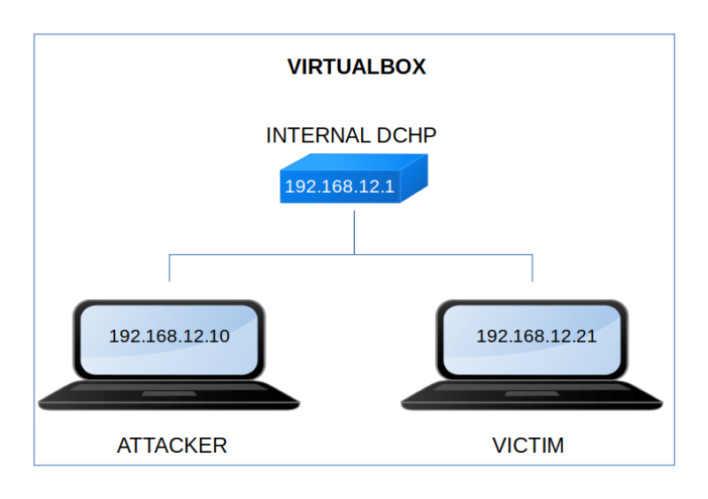

Nagini
▸ Nagini
▸ 1. Scan Network
▸ 2. Finding Services and Ports
▸ 3. Enumerate
▸ 3.1 Files and directories
▸ 3.1.1 Installing Rust
▸ 3.1.2 Installing quiche
▸ 3.1.3 Internal Network Resource Fetching Page
▸ 3.1.4 SSRF (Server Side Request Forgery)
▸ 3.2 Joomla
▸ 3.3 Mysql statements with Gopherus
▸ 3.3.1 Statement 1 (SHOW databases)
▸ 3.3.2 Statement 2: (SHOW tables)
▸ 3.3.3 Statement 4: (Getting passwords)
▸ 3.3.4 Statement 5: (Changing the password)
▸ 3.4 Login Joomla
▸ 4. Exploitation
▸ 4.1 Injecting a webshell payload
▸ 4.2 Opening a Handler
▸ 4.3 Opening a shell (Getting the first flag)
▸ 5. Privilege Escalation
▸ 5.1 Looking for more users
▸ 5.1.1 Privilege user "snape"
▸ 5.1.2 Privilege user "Hermoine" (Getting the 2nd flag)
▸ 5.1.3 Privilege user "root" (Getting the 3rd flag)
Difficulty: Intemediate.
Flag: 3 flags.
Learning:
Scanning
• Open ports and Running services (Nmap)
Enumeration
• Gobuster
• Rust
• Quiche
• Server-side request forgery (SSRF)
• Joomla
• Gopherus
Exploit
• Msfvenom
• Msfconsole
• Decode a password
Privilege Escalation
• LinPEAS
• firepwd
• Capture flags with SSH
• Download (Mirror): https://download.vulnhub.com/harrypotter/Nagini.ova
• Download (Torrent): https://download.vulnhub.com/harrypotter/Nagini.ova.torrent
Install the machine on VirtualBox:
1. Download the file.
2. On Virtualbox choose File->Import Appliance.
3. Select the file “ova”.
4. Accept to import.


Watch your Machine IP.
$ ifconfig
Output:

Diagram
